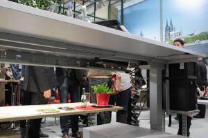

Gesundes Arbeiten im Büro-Teil 1
Ein sicherer und angenehmer Arbeitsplatz erhält die Gesundheit und hilft, leistungsfähig zu bleiben. Die Beitragsreihe „Gesundes Arbeiten im Büro“ soll dabei helfen, den Büroalltag gesünder und den Arbeitsfluss produktiver zu gestalten. Verkrampfte Hände, ein verspannter Nacken, Rückenschmerzen oder müde Augen – wer den ganzen Tag am Schreibtisch im Büro oder im Home-Office sitzt, kennt diese unschönen Begleiterscheinungen. Teure Arbeitsausfälle, Verletzungen und Folgeerscheinungen einer schlechten Büroausstattung sind mit sinnvollen Maßnahmen vermeidbar.
Bürotätigkeiten gehen an die Substanz
Wer den ganzen Tag am Schreibtisch arbeitet und sich nur wenig bewegt, verkürzt seine Lebenszeit. Das ist zumindest das Ergebnis einer Studie der University of Sydney. Sie besagt, dass wir Menschen von Natur aus nicht zum Sitzen geschaffen sind.
Bereits mehrere, über den Tag verteilte kleine Pausen können dieses Risiko vermindern (damit sind keine Raucherpausen gemeint!). Jeder noch so kleine Gang hilft dem Körper. Stellen Sie einen Drucker daher nicht direkt am Arbeitsplatz auf. Ein zentral aufgestellter Drucker „zwingt“ Ihre Belegschaft dazu, sich zu bewegen. Geben Sie Mitarbeitern auch die Möglichkeit, sich in der Pause fünf Minuten an der frischen Luft zu erholen. Das steigert die Konzentration!
Gefahrenquellen beseitigen

Kabel-Stolperfallen eliminiert
Große und lebensbedrohliche Verletzungen sind im Büro eher selten zu finden. In der Regel sind kleinere Stoß- und Hautverletzungen anzutreffen. Stress, Hektik und Berge von Unterlagen spielen neben Umgebungseinflüssen eine zusätzliche Rolle, unaufmerksam zu werden und sich eventuell zu verletzen. Potentielle Verletzungsgefahren für Personal und Gäste kann man mit wenigen Mitteln eliminieren:
Kantige Möbelstücke sind eine potentielle Gefahrenquelle. Stehen Neuanschaffungen für die Büroeinrichtung an, sollten insbesondere Möbel mit abgerundeten Ecken bevorzugt werden. An runden Schreibtischfüßen hat man ein wesentlich geringeres Verletzungsrisiko, als bei herkömmlichen Tischfüßen. Ganz gleich ob im Büro oder Home-Office: Regale sollten nie in Kopfhöhe angebracht sein. Auch wer Unterlagen aus einem Schrank oder einer Schublade benötigt, sollte diese gleich wieder schließen.
Kaum zu glauben, aber es gibt Menschen, die heute noch ihren Bürostuhl als Ersatz für eine Leiter verwenden. Sicherlich kann sich jeder vorstellen, welche Folgen es haben kann, wenn sich der Stuhl unter den Füßen selbstständig macht. Ein Bürostuhl ist niemals als Leiter zum Erreichen von Akten oder Unterlagen in hohen Schränken geeignet. Lassen Sie ihre Belegschaft daher gar nicht erst auf diese Idee kommen. Stellen Sie neben hohen Schränken einen kleinen Tritthocker auf, der gegebenenfalls genutzt werden kann.
Um für alle Fälle vorbereitet zu sein, sollte in jedem Fall ein Verbandskasten griffbereit stehen. Ein Feuerlöscher und gut markierte Notausgänge retten bei einem Brand Menschenleben. Die Notausgänge und Fluchtwege dürfen hierbei niemals zugestellt werden. Natürlich können nicht alle Unfälle und Verletzungen vermieden werden, kennt man aber häufige Ursachen und beseitigt diese, ist das ein guter Schritt zur Vorbeugung.
Elektrogeräte
Elektrogeräte im Büro und am Arbeitsplatz sind nichts Ungewöhnliches. Lassen Sie die Geräte regelmäßig von einem Fachmann überprüfen und warten. Dies gilt nicht nur für den eigenen Computer, sondern auch für den Drucker und die Kaffeemaschine im Büro. Alte Netzteile, die einen hochfrequenten Ton erzeugen, sollten ausgetauscht werden. Aus eigener Erfahrung kann ich sagen, dass solche Störgeräusche die Konzentration erheblich einschränken!
Stolperfallen gibt es überall – ein eilig verlegter Teppichboden oder ein achtlos abgelegtes Kabel kann schnell gefährlich werden. Besondere Beachtung sollten hierbei Kabel erhalten: Speziell in kleinen Büros und Home-Offices werden Leitungen und Kabel oftmals einfach am Boden verlegt.
Hier wird es für das Personal schnell gefährlich. Leitungen sollten daher immer in Kabelschächten verstaut oder durch Kabelkanäle verbaut sein. Das beugt nicht nur Stürzen und Verletzungen vor, sondern schützt auch Stromkabel, Verbindungen und Geräte vor Beschädigung.
Umwelteinflüsse
Die richtige Temperatur (20°C bis maximal 26°C im Sommer) und eine Luftfeuchtigkeit zwischen 40 und 60 Prozent schaffen ein angenehmes Raumklima. Müden Augen und einem schweren Kopf kann durch regelmäßiges Lüften vorgebeugt werden. Das steigert nicht nur die Leistungsfähigkeit, sondern auch die Stimmung im Büro.
Ausreichend Tageslicht ist für ein gutes Arbeitsklima wichtig. Auch wenn man am Fenster sitzt – an trüben Tagen sollte trotzdem eine flimmerfreie Beleuchtung eingeschaltet werden. Sorgen Sie für eine optimale Ausleuchtung: 300 Lux sollten bei einem Arbeitsplatz in Fensternähe, 500 Lux bei fensterlosen Plätzen vorhanden sein.
Gerade in Großraumbüros ist der Lärmpegel sehr hoch, andere Mitarbeiter reden und Elektrogeräte sind ständig in Betrieb. Dies kann bei Einzelnen zu Kopfschmerzen führen und die Konzentrationsfähigkeit leidet. Mit speziellen Trennwänden kann die Geräuschkulisse vermindert werden.
Der perfekte Arbeitsplatz
Verspannungen und Rückenschmerzen haben oftmals mit dem eigenen Arbeitsplatz zu tun. Die Schreibtischhöhe, der Abstand zum Bildschirm und der Bürostuhl sind ausschlaggebend.
Der Schreibtischstuhl muss höhenverstellbar, rückengerecht und kippsicher sein. Der Bildschirm sollte zwischen 50 und 80 Zentimeter entfernt stehen und die oberste Zeile muss leicht unterhalb der Augenhöhe sein. Wer diese Maße grundsätzlich beachtet, der kann Verspannungen bereits vorbeugen. Dieses Thema soll jedoch ausführlich im nächsten Teil behandelt werden.
Spickzettel für einen gesünderen Arbeitsplatz
- Geben Sie Mitarbeitern die Möglichkeit, sich zu bewegen
- Eliminieren Sie Stolperfallen und potentielle Gefahrenquellen
- Sorgen Sie für ein gutes Raumklima
- Versuchen Sie, Bürolärm zu reduzieren
Weitere Artikel

KI als Copilot für die Assistenz
KI in Form von ChatGPT & Co sind hervorragende neue Werkzeuge im Office-Alltag, um produktiver und ja, auch kreativer, zu werden. Neugier statt Angst ist angezeigt im Umgang mit diesen Werkzeugen, die wie andere Werkzeuge auch …

Veränderung braucht Gewohnheit
Sowohl im Berufs-als auch im Privatleben sind wir ständig im Veränderungsmodus. Manche Veränderungen wollen wir umsetzen, manche müssen wir mitmachen. Wir alles wissen, dass Veränderung nie leicht sind und je länger wir etwas auf …